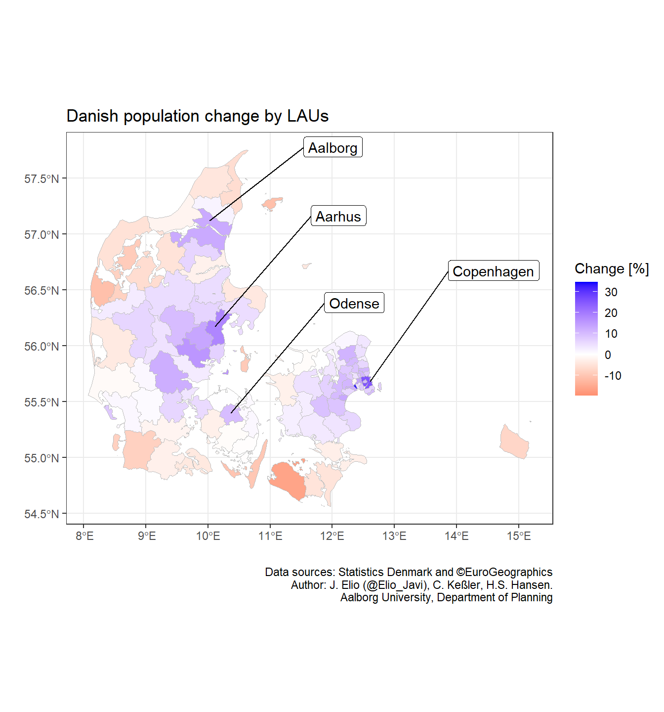
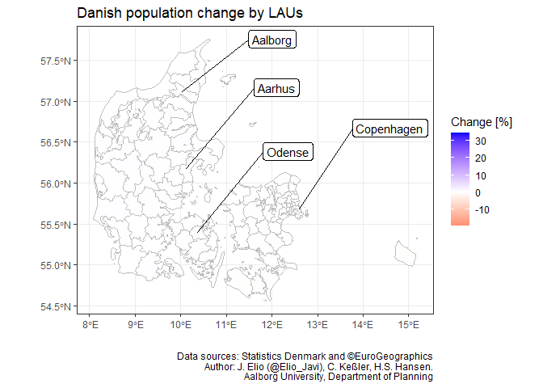

Chapter 11 Animation
The package gganimate is an extension of ggplot2 where animations are defined by adding on layers of information in our code with the operator +. The basic function takes the form transition_xxx(), and it is where we define how the data should be treated. For example, we will use transition_states() which split the data based on the levels of a given column. However, there are other options that can be used depending on the structure of our data and what we would like to achieve. I would therefore recommend you to read the help for getting other transition options.
In this regards, the process of building an animation starts in a similar way that when we create a static graph. In our case, we have a sf objects (i.e. dk_lau_pop) and we would like to plot the population change over time (i.e. pop_pct_2008).
dk_lau_pop# Simple feature collection with 5346 features and 9 fields
# Geometry type: GEOMETRY
# Dimension: XY
# Bounding box: xmin: 8.08 ymin: 54.6 xmax: 15.2 ymax: 57.8
# Geodetic CRS: WGS 84
# First 10 features:
# CNTR_CODE LAU_NAME LAU_CODE FID GISCO_ID ancestry date pop pop_pct_2008
# 1 DK Kalundborg 326 DK_326 DK_326 Total 2008-01-01 49743 0.00000
# 2 DK Kalundborg 326 DK_326 DK_326 Total 2008-04-01 49711 -0.06433
# 3 DK Kalundborg 326 DK_326 DK_326 Total 2008-07-01 49845 0.20505
# 4 DK Kalundborg 326 DK_326 DK_326 Total 2008-10-01 49777 0.06835
# 5 DK Kalundborg 326 DK_326 DK_326 Total 2009-01-01 49741 -0.00402
# 6 DK Kalundborg 326 DK_326 DK_326 Total 2009-04-01 49613 -0.26134
# 7 DK Kalundborg 326 DK_326 DK_326 Total 2009-07-01 49583 -0.32165
# 8 DK Kalundborg 326 DK_326 DK_326 Total 2009-10-01 49359 -0.77197
# 9 DK Kalundborg 326 DK_326 DK_326 Total 2010-01-01 49265 -0.96094
# 10 DK Kalundborg 326 DK_326 DK_326 Total 2010-04-01 49271 -0.94888
# geometry
# 1 MULTIPOLYGON (((11.3 55.8, ...
# 2 MULTIPOLYGON (((11.3 55.8, ...
# 3 MULTIPOLYGON (((11.3 55.8, ...
# 4 MULTIPOLYGON (((11.3 55.8, ...
# 5 MULTIPOLYGON (((11.3 55.8, ...
# 6 MULTIPOLYGON (((11.3 55.8, ...
# 7 MULTIPOLYGON (((11.3 55.8, ...
# 8 MULTIPOLYGON (((11.3 55.8, ...
# 9 MULTIPOLYGON (((11.3 55.8, ...
# 10 MULTIPOLYGON (((11.3 55.8, ...Therefore, we’d use geom_sf() for the static part as we saw in previous post:
p <- ggplot() +
geom_sf(data = dk_lau_pop,
aes(fill = pop_pct_2008),
color = "grey",
size = 0.05) +
scale_fill_gradient2(name = "Change [%]",
low = "red",
mid = "white",
high = "blue",
midpoint = 0) +
theme_bw() +
geom_sf_label_repel(data = big_cities,
aes(label = LAU_NAME),
force = 20,
nudge_y = 1,
nudge_x = 2,
seed = 15) +
labs(title = "Danish population change by LAUs",
x = "",
y = "",
caption = "Data sources: Statistics Denmark and ©EuroGeographics\nAuthor: J. Elio (@Elio_Javi), C. Keßler, H.S. Hansen.\nAalborg University, Department of Planning")
p
Once we have the static part, we add the functions for the animation. As we can see in our data (dk_lau_pop), there is a column called “date” that represents the first day of the quarter where we have population data. It goes from “2008-01-01” to “2021-01-01” and thus we can use transition_states() to split our data based on those dates and plot them individually.
anim_1 <- p + transition_states(date)
# Export animation (.gif)
anim_save("anim_1.gif", anim_1)
Finally, we should add labels that help us to interpret the transition stages (e.g. add a subtitle with the dates). We can do that by providing a frame variable to our plot. In our case, as we have used transition_states(), we can use closest_state which is the name of each state we split the data (i.e. date). However, different transitions provide different frame variables and we may need to use other frame variable (e.g. frame).
anim_2 <- anim_1 + labs(subtitle = "Date: {closest_state}")
# Export animation
anim_save("anim_2.gif", anim_2)